基于多源时空数据融合的城市人流预测与异常预警系统
实习项目总结报告（中文脱敏版）
| 项目 | 内容 |
|---|---|
| 实习岗位 | 网约车安全方向算法实习生 |
| 项目周期 | 5个月，约20周 |
| 报告组织 | 按七个项目里程碑的交付顺序展开 |
| 报告日期 | 2026年8月15日 |
| 数据说明 | 使用脱敏的城市网格化网约车流量样本描述技术方案，不披露业务敏感字段、原始订单或个人信息 |
摘要
城市网约车流量具有明显的日周期、周周期、区域异质性和突发波动。对于安全与运营团队而言，仅预测未来流量并不足够：系统还需要判断观测变化是否偏离正常规律，将离散异常网格合并为可处置事件，并给出事件类型、严重度和解释证据。本项目围绕“提前预知、及时发现、辅助处置”三个目标，完成了从多源数据治理、时空特征与图结构构建，到人流预测、异常检测、服务接口、交互式地图、可解释性与性能优化的端到端算法工程闭环。
数据侧将14段半小时级流入/流出序列统一为 22,484 × 2 × 32 × 32 的标准张量，并建立真实时间戳、稳定节点编号和训练专用数据缩放规则。针对早期按数组位置切窗可能跨越真实时间缺口的问题，项目补充了 gap-aware 连续性审计：每个“48步历史+48步未来”样本必须验证内部95个相邻时间差均为30分钟，最终测试集保留4,022个有效窗口。静态节点候选特征共41维，覆盖地理位置、路网、功能性POI、遥感、交通设施与历史统计；其中8维由全序列流量计算，存在泄漏风险，训练时予以删除，最终使用33维无泄漏静态特征。动态图输入包含流入、流出与7维真实时间/日历编码，共9维。
模型侧先完成ARIMA、Prophet、LSTM、GRU、GCN、GAT、STGCN等基线，再围绕显式空间先验、自适应邻接、时间自注意力和上下文门控设计项目版 AGFormer。该模型不是外部同名论文的严格复现，而是把 STGCN 的显式图传播、Graph WaveNet 的节点嵌入自适应邻接和 Transformer 的时间注意力组合为统一模块。项目同时将 Spacetimeformer 从轻量近似版本逐步对齐至 value/time embedding、given/missing embedding、encoder-decoder target token、local/global attention 与 cross-attention，用作更通用的架构对照。严格消融表明，简单扩大 Spacetimeformer 容量、增加未来时间上下文、多图全局加权、天气、完整日历和周期滞后均未带来稳定收益；从 Spacetimeformer 实验中发现的 linear residual head 则可稳定迁移至 AGFormer。最终四随机种子 AGFormer 集成在相同4,022个测试窗口上取得 h1 MAE 11.3019、24小时平均 MAE 15.9030、RMSE 30.2250、MAPE 35.44%，相对最佳单模型 MAE 进一步降低1.30%。
异常检测侧实现统计、重构和预测误差三条互补分支：3σ/IQR建立网格—时槽正常范围，VAE与Transformer自编码器在 weak-normal 样本上学习正常模式，最终预测模型的观测—预测残差提供第三类证据。验证集选定的软投票权重为0.70/0.20/0.10，决策阈值为0.56。系统将异常网格按时间连续性、空间IoU和质心距离合并为事件，并基于范围、形态、路网、持续时间和流入流出平衡度给出大型集会、交通拥堵、突发事件三类规则标签。最终输出131个候选事件；在 Level-A 弱标签口径下，timestep F1 为0.4912，事件级F1为0.4819。由于缺少权威事件真值且统计规则同时参与弱标签与融合，这些数字只能解释为固定弱标签口径下的一致性，不能等同于现实业务准确率。
系统侧封装 batch 与 realtime 微批两种流水线，FastAPI提供热力图、24小时预测、异常事件与统计查询，Streamlit地图支持实时热力、预测动画、事件详情、历史检索与三级预警。Week 7进一步完成注意力、TreeSHAP代理和异常上下文证据分析，并通过共享推理、统计缓存、关闭无用注意力权重、优化 DataLoader 与API派生缓存，将暖启动FP32端到端流水线由6.416秒降至4.613秒，实现1.39倍加速。项目最终形成了可复现、可解释、可服务化的城市人流预测与异常预警原型，同时明确记录数据真值、地理元数据、实时性和跨城市泛化方面的边界。
关键词： 城市人流预测；时空图神经网络；Transformer；多源数据融合；异常检测；FastAPI；可解释性
1. 项目背景与需求分析
1.1 业务背景
本项目来自网约车安全算法实习场景。城市中的出行需求与人群活动会受到工作日节律、天气、节假日、商业区功能、交通设施和突发事件共同影响。传统人工看板能够呈现“现在有多少流量”，但很难同时回答未来24小时趋势、变化是否异常、异常发生在哪里以及应采取何种提醒。若只追求预测精度，系统只能输出连续数值；若只使用固定阈值，又容易把正常的早晚高峰误判为异常。因此，项目必须把预测、检测、事件化和服务化视为一个连续决策链，而不是几个独立模型。
从安全运营视角，核心问题可归纳为三类。第一是预判：未来半小时至24小时，各区域的流入规模如何变化，哪些区域可能出现显著增长。第二是检测：当前高流量是否已经被模型预期，还是偏离了历史与空间规律；绝对值很高但可预测的晚高峰不一定是异常，而绝对值不高但突然偏离局部模式的变化可能更值得关注。第三是响应：将若干网格和连续时间步整理为事件，给出位置、持续时间、候选类别、严重度和证据，供运营人员检索与核验。
1.2 功能需求
项目将业务目标拆为五类功能需求：
- 人流预测。 使用过去24小时即48个半小时步，预测未来24小时48步的区域流入量，同时保留 h1、h3、h6、h12 和完整时域指标。
- 异常检测。 同时实现统计偏离、正常模式重构误差和最优预测模型残差三种方法，避免单一规则决定所有结果。
- 事件融合与分类。 将逐网格、逐时间步的异常掩码合并为时空事件，支持大型集会、交通拥堵和突发事件三类候选标签。
- 查询与可视化。 提供按区域、时间、事件类型和预警等级查询的REST API；在Web端展示实时热力、未来24小时动画、事件标记和历史统计。
- 分级预警。 将研究阶段的严重度映射为一般、重要、紧急三级提示，控制列表、横幅、弹窗和声音行为。
1.3 非功能需求
算法系统还需满足以下工程约束：
| 类别 | 要求 |
|---|---|
| 数据正确性 | 真实时间戳、连续窗口、训练集拟合缩放器、静态特征无未来泄漏 |
| 比较公平性 | 模型在相同窗口、相同切分和相同指标掩码下比较；超参数仅看验证集 |
| 资源安全 | 单GPU串行训练，限制batch和workers，支持断点、早停和显存门禁 |
| 可复现性 | 保存配置、随机种子、checkpoint、日志、摘要、数据与代码哈希 |
| 可解释性 | 对预测说明时间、空间和特征依赖；对异常说明三分支贡献和候选外部证据 |
| 服务稳定性 | API不在请求中训练模型；推理产物原子发布；缺失产物时fail-fast或返回degraded |
| 隐私与汇报 | 采用网格化、脱敏和聚合口径，不展示订单级轨迹或个人身份信息 |
1.4 技术调研与选型原则
Week 1并未直接选择最复杂模型，而是把论文机制转化为可验证假设。STGCN表明固定图卷积可以编码已知空间邻接，但其时间卷积和固定图可能限制远程关系；Graph WaveNet通过两个节点嵌入矩阵学习自适应邻接，为缺失或非局部关系提供数据驱动补充；Transformer提供全局时间注意力、残差、归一化和前馈层；Spacetimeformer把变量—时间对展开为token，代表更通用但计算更昂贵的时空注意力路线[1-4]。异常侧则把统计方法、VAE/Transformer AE重构和预测残差作为三种不同归纳偏置，而不是假定某一种方法天然最优。
调研最终形成四项原则：先建立传统与深度学习基线；显式图和自适应图都要通过消融验证；所有新增上下文特征必须在相同数据规则下比较；不能因模型理论上更通用就预设它一定优于任务先验更强的小模型。这些原则在Week 4的多轮负结果中被证明非常重要。
2. 总体技术路线与五个月工作安排
2.1 端到端技术路线
项目技术路线可概括为：
脱敏网格流量与外部数据
↓
时间规范化、缺口审计、数据清洗
↓
动态特征 + 静态节点特征 + 候选图结构
↓
传统/深度基线 → AGFormer / Spacetimeformer → 消融与多seed
↓
统计异常 + 重构异常 + 预测残差 → 加权融合
↓
空间连续事件合并 → 规则分类 → 严重度/三级预警
↓
Batch / realtime微批流水线 → FastAPI → Streamlit地图
↓
精度、解释性、延迟、内存与部署边界评估
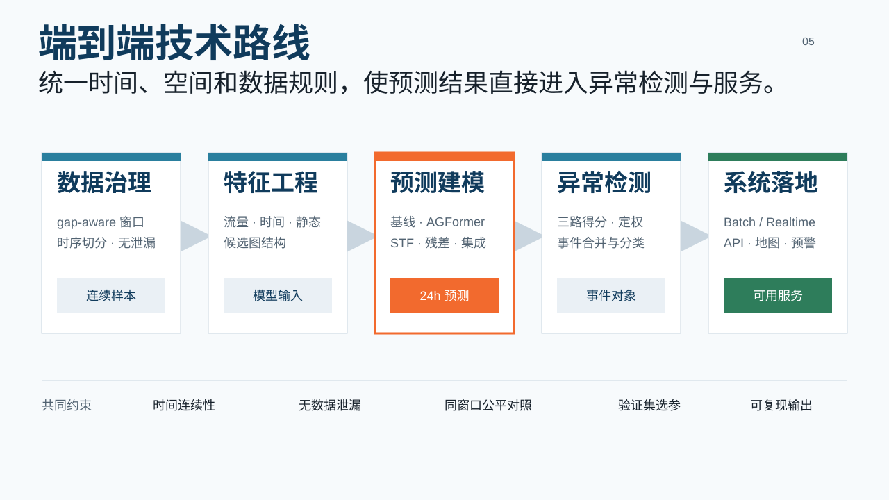
贯穿全流程的统一坐标是 timestamp × node_id × channel。时间戳负责保证不同来源在同一30分钟槽对齐，node_id 保证流量、静态属性、图边和地图展示引用同一区域，channel则区分流入、流出和上下文。这个契约避免了“文件行号相同即代表同一区域”或“数组相邻即代表时间连续”等隐含假设。
2.2 项目里程碑与20周周期
为了与已有周报交付一致，正文继续使用Week 1–Week 7命名；它们表示七个里程碑包，而不是宣称整个项目只持续七个自然周。五个月工作量可回顾性分配如下：
| 周期 | 主要工作 | 对应里程碑 |
|---|---|---|
| 第1–3周 | 业务需求、论文调研、数据源与风险分析 | Week 1 |
| 第4–7周 | 清洗、真实时间、外部数据、节点特征、图结构、数据报告 | Week 2 |
| 第8–9周 | ARIMA/Prophet、LSTM/GRU、GCN/GAT、STGCN基线 | Week 3 |
| 第10–14周 | AGFormer、Spacetimeformer、门控、多图、天气、日历、线性残差、多seed | Week 4 |
| 第15–16周 | 三类异常检测、融合、事件合并、分类、人工抽样 | Week 5 |
| 第17–18周 | 端到端流水线、FastAPI、Web地图、三级预警、部署文档 | Week 6 |
| 第19–20周 | 全面评估、注意力与SHAP、异常原因、性能优化、Optuna方案 | Week 7 |
模型训练与选型占据最长周期，因为每次架构变化都需要数据规则核对、训练、日志检查、同窗口评估、消融和随机种子复验。数据工程位于模型之前，但并非一次性工作：真实时间修复、静态泄漏排除、天气对齐和地图显示校准都在后续实验中反向推动数据层完善。
3. 数据处理、特征工程与图构建
3.1 标准流量张量
原始流量由14个时间分段组成，每个时间步包含 inflow 和 outflow 两个通道，空间为32×32匿名网格。预处理首先解析本地日期槽，转换为统一时间戳，检查重复、缺失、负值、异常范围和数据类型，再将分段拼接为：
data.shape = (22,484, 2, 32, 32)
timestamp.shape = (22,484,)
dtype = float32 + datetime64
step = 30 minutes
空间维展平后共有1,024个节点，编号规则为 node_id = row × 32 + col。行方向由北向南，列方向由西向东。一个节点同时绑定动态流量序列、静态属性和图边。预估单格尺度约为1.33×1.73公里，但由于原始数据缺少完全权威的地理边界，训练只依赖稳定的行列拓扑；Web地图使用独立展示坐标校准，不能反向替代训练元数据。
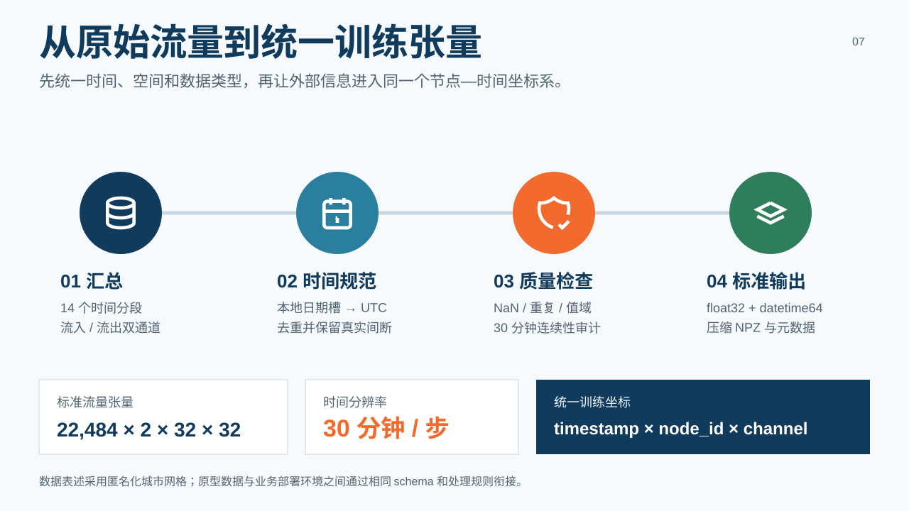
3.2 时间连续性与 gap-aware 切窗
早期实现按数组下标生成窗口，默认相邻记录必然相隔30分钟。然而分段拼接、停运日或缺测会造成真实时间跳跃。后续审计识别出73处非连续区间。若窗口跨越缺口，模型会把数小时或数天后的数据当成下一半小时目标，既破坏周期规律，也会产生不真实的低损失或高残差。
最终规则要求每个样本包含48步历史和48步未来，共96个时间点，其内部95个相邻差值必须全部等于30分钟。数据按时间顺序7:1:2切分，均值与标准差只在训练集拟合，再传给验证和测试。最终严格测试窗口为4,022个。所有Week 4最终模型、Week 5预测残差和Week 7评估均使用这一口径。
清洗阶段曾对绝对z-score大于5的点做插值，这有利于稳定预测，却可能抹去真实异常。因此报告将其视为原型限制：生产异常系统应并行保留不可变的原始镜像，预测训练可以使用清洗视图，异常核验则回看原始观测，避免把“清洗掉异常”与“检测异常”混为一谈。
3.3 时间、日历与天气特征
最终动态特征以真实时间戳计算，而不是用序号 % 48 推断：
| 特征 | 维度 | 作用 |
|---|---|---|
| inflow / outflow | 2 | 核心动态流量 |
| slot sin / cos | 2 | 半小时日内周期 |
| weekday sin / cos | 2 | 周周期 |
| is_weekend | 1 | 周末模式 |
| is_holiday | 1 | 法定节假日 |
| workday | 1 | 调休与补班语义 |
因此每个节点—时间步的动态输入为9维。日历模块对调休日和补班日做了显式区分，避免简单“周六日=休息日”的错误。天气数据构建了温度、湿度、风速、降水和天气状态等12个字段，并达到22,484/22,484时间戳对齐；但Week 4消融显示，天气与日历联合输入没有产生稳定MAE收益，因此天气未进入最终预测模型，仅在Week 7异常上下文分析中作为候选证据。
3.4 41维候选静态节点特征与33维最终输入
静态候选向量共41维，可分为八组：
| 特征组 | 维度 | 示例 |
|---|---|---|
| 地理位置 | 4 | 归一化经纬度、中心距离、环带位置 |
| 距离特征 | 2 | 最近交通枢纽、最近商业中心距离 |
| 路网密度 | 5 | 总道路、高速、主干、次干、支路密度 |
| 功能性POI | 11 | 商业、餐饮、教育、医疗、办公、居住等 |
| 遥感 | 5 | 建成区、植被、水体、亮度等Landsat统计 |
| 历史流量统计 | 8 | 均值、p99、零值率、峰值、周末比、净流向、变异系数等 |
| 交通设施密度 | 3 | 地铁站、入口、公交站密度 |
| 线路与路由 | 3 | 轨道线路数、换乘枢纽、公交线路数 |
计数型特征采用 log1p 缩放，连续变量再进行归一化。功能性POI与交通设施分开，是因为早期交通类POI数量占比过高，使POI向量之间普遍相似，功能相似图容易退化。
其中第27–34列的8维历史流量统计由完整时间序列计算。如果直接用于训练，节点特征会包含验证和测试时期的均值、峰值等信息，形成静态形式的未来泄漏。最终加载器明确删除这8列，只保留33维真正静态的地理、路网、POI、遥感和交通设施特征。这个处理说明“特征在时间上不变化”并不等于“特征天然无泄漏”，其计算范围同样需要审计。
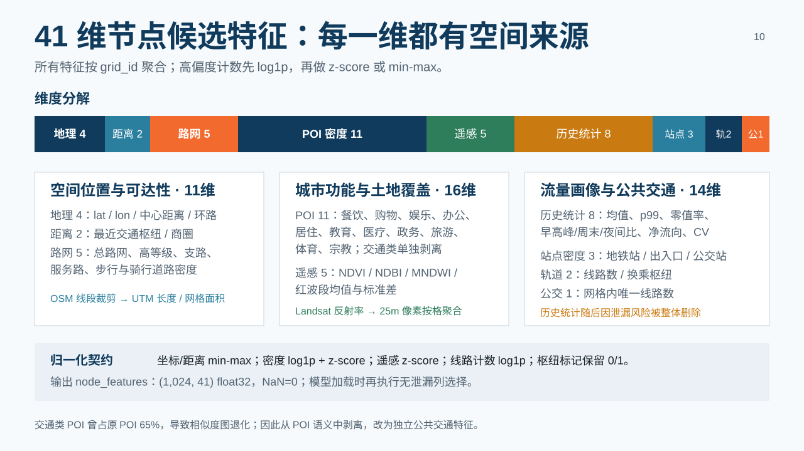
3.5 四类候选图结构
四张候选图共享1,024个节点，但表达不同关系：
- 空间图
G_spatial。 使用Moore八邻域，权重为exp(-d²/1.5²)；正交邻居权重约0.641，对角邻居约0.411，共7,812条有向边，平均每节点7.6条。它编码最稳定的规则网格先验。 - POI图
G_poi。 对11维功能性POI密度做log1p与L2归一化，按余弦相似度选择top-10邻居，共10,240条边。它允许相距较远但功能相似的区域交换信息。 - 流量相关图
G_flow。 根据inflow序列的Pearson相关系数选择top-15正相关邻居，共15,255条边。该图可能重复历史输入信息，且最初由全序列构建，因此最终不作为生产图；若重启该方向，必须仅用训练期重建。 - 交通图
G_transit。 根据轨道线路拓扑连接最多10站范围，双向边权按exp(-hops/3)衰减，共3,080条边，表达线路传播而非直线距离。
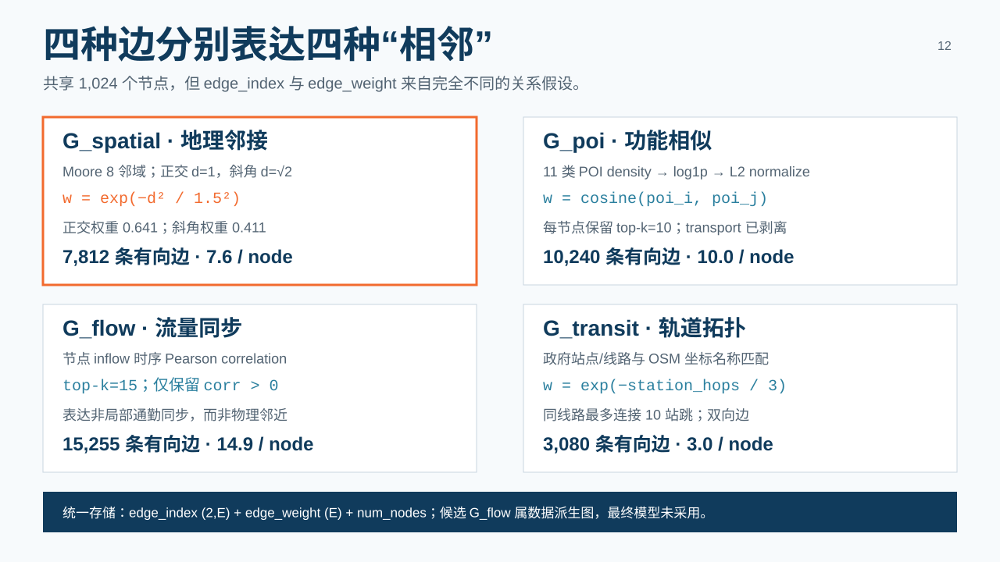
图文件统一保存 edge_index(2,E)、edge_weight(E) 和 num_nodes。Week 4多图实验并未证明语义越多越好：全局图权重最终被流量图占据92.18%，而POI和交通图几乎被抑制。最终模型只保留显式空间图，并另行学习自适应稠密邻接。
4. 预测基线、指标与实验规范
4.1 统一预测任务
Week 3的目标是建立从传统统计模型到图神经网络的可运行基线，而不是立即追求最终分数。预测对象为未来48步inflow，评价指标在反归一化后的原始流量尺度上计算。MAE反映平均绝对偏差，是后续预测残差异常检测的主指标；RMSE对少数大误差更敏感，用于审计尖峰风险；MAPE衡量相对误差，但在低流量区域不稳定，因此只在真实值非零并使用稳定项的掩码上报告。
报告中的 h1、h3、h6、h12 均为从预测起点到对应步数的累计指标，不是孤立的第3、第6或第12步；它们分别覆盖0.5、1.5、3和6小时，avg 覆盖完整24小时。这种定义便于观察误差如何随预测范围扩大，但在答辩中必须说明，否则容易被误解为“第12小时单点误差”。
4.2 传统统计基线
ARIMA对代表网格执行ADF平稳性检验、ACF/PACF分析、AIC阶数选择和Ljung–Box残差检验，最终用较集中的 ARIMA(2,0,1) 作为全局配置。Prophet启用日与周季节性，用一次拟合后外推的方式覆盖测试时段。初始实验中，ARIMA与Prophet的24小时平均MAE分别约44.73和43.81，显著弱于深度模型；Ljung–Box检验还显示ARIMA残差存在自相关，说明日周期与周周期中仍有可预测结构。
统计模型的价值并非分数领先，而是提供可解释下界：如果复杂模型没有显著超过它们，说明数据、切分或实现可能存在问题。同时，逐网格拟合的计算成本随节点数增长，难以充分共享不同区域之间的模式，也无法直接利用空间图和多源上下文。
4.3 时序与图基线
LSTM与GRU对所有节点共享时序编码器，GCN与GAT则把历史序列展平为节点特征后在空间图上传播。初始6小时输入实验中，LSTM/GRU平均MAE约29，明显优于GCN/GAT的33–37，说明仅有空间传播而缺少专用时序模块不足以处理24小时预测。将历史窗口从6小时扩展到24小时后，LSTM和GRU平均MAE降至约20.34和20.43；进一步扩到一周没有继续改善，提示超长序列并非简单增加输入即可获益。
STGCN进一步交替使用时间卷积和图卷积，验证了联合时空建模方向，但其固定图和卷积感受野仍限制灵活性。多图STGCN也说明，直接把多种关系叠加并不会自动得到有效融合。Week 3最重要的结论是：时间依赖是强基线，空间结构必须与时间模块联合使用；这直接推动Week 4采用时间自注意力加双图路径。
4.4 早期指标与最终口径的关系
Week 3部分结果生成于真实时间缺口审计之前，因此适合描述模型家族的相对趋势，不应与Week 4最终gap-aware结果直接混表。时间修复后，LSTM按相同4,022个测试窗口和多随机种子重跑，24小时平均MAE为19.4941、RMSE为36.8806、MAPE为34.64。后续所有最终选型均以这一严格版本为基线。
这次修正形成了项目的重要实验规范：实现完成并不意味着指标可直接使用；当数据规则变化时，关键基线必须重跑，旧结果必须保留来源和适用边界。模型比较优先使用同窗口、同切分、同seed或明确区分多seed均值与预测ensemble。
5. 模型设计、消融与最终选型
5.1 项目版 AGFormer 架构
项目中的AGFormer全称为 Adaptive Graph Transformer for Spatio-Temporal Prediction，是面向本任务的自主组合实现，不宣称复现外部同名论文，也不是完整STGCN与完整Graph WaveNet的串并联。其单个block按以下顺序工作：
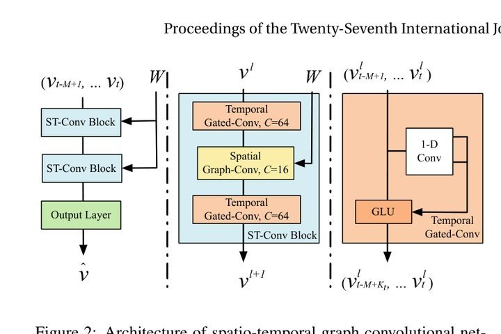
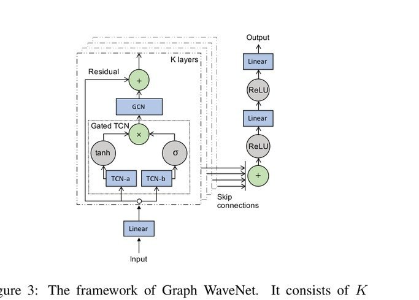
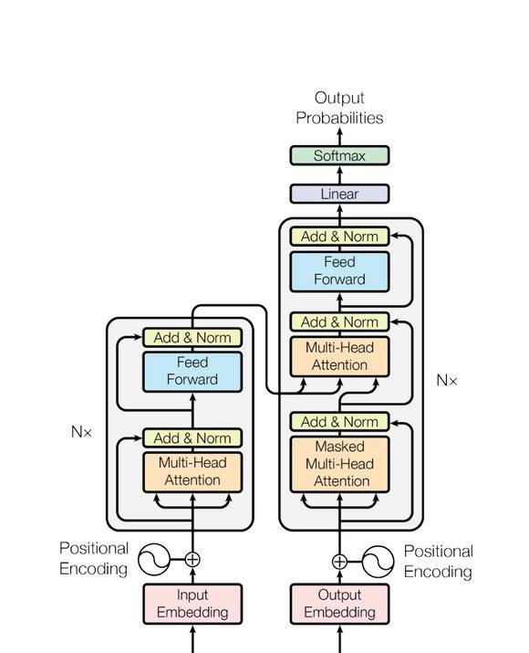
节点独立的时间多头自注意力
↓ 残差 + LayerNorm
预定义空间图 DenseGCN + 自适应邻接传播
↓ 相加 + ReLU + 残差 + LayerNorm
前馈网络 FFN
↓ 残差 + LayerNorm
时间路径把每个节点的48个历史半小时步作为序列，使用2层、4头、d_model=32 的Transformer self-attention，并加入正弦位置编码。显式空间路径使用 G_spatial 的归一化邻接矩阵传播规则网格邻居信息。自适应路径学习两个节点嵌入矩阵 E1、E2：
A_adaptive = softmax(ReLU(E1 × E2ᵀ))
在每个时间步，预定义图输出和自适应图输出相加。前者缩小搜索空间、提供稳定局部先验；后者补充远距离或无法由固定拓扑表达的关系。与Graph WaveNet不同，本模型没有使用其完整的扩张因果卷积堆栈；与STGCN不同，时间卷积被Transformer注意力替换。
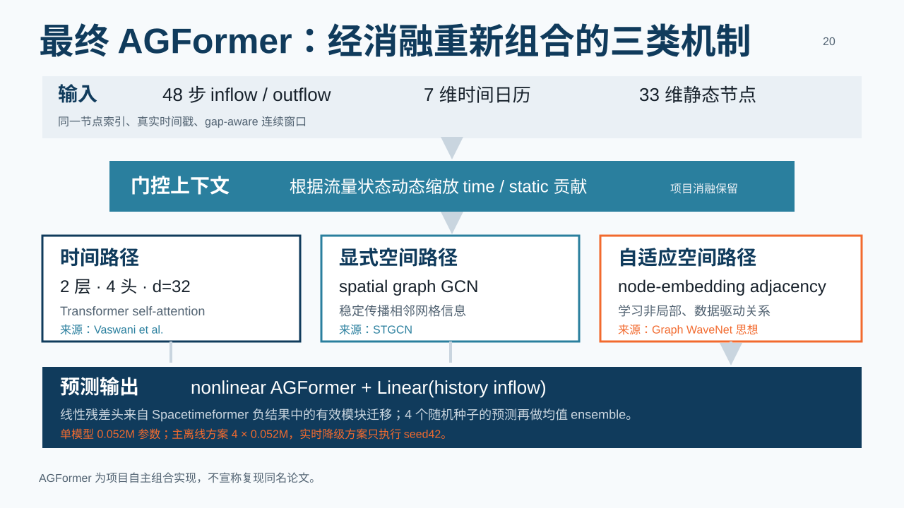
5.2 门控上下文融合
流量、时间日历和静态节点特征的统计性质不同，直接拼接或相加可能使弱上下文淹没主信号。门控版本先分别投影流量与上下文，再由当前流量状态决定上下文注入强度：
h_flow = Linear(flow)
context = Merge(TimeProjection, StaticProjection)
gate = sigmoid(Linear([h_flow, context]))
h = h_flow + gate × context
这种结构的直觉是，同一个节假日或商业区属性在不同流量状态下影响不同：模型无需在每个时间步强制使用相同强度的静态信息。消融结果中，AGFormer Time+Static三seed平均MAE为16.9376，门控上下文seed42达到16.5350，成为加入线性残差之前的最佳单模型。
5.3 Spacetimeformer 原版式对齐
Spacetimeformer把变量—时间对作为token，可用注意力直接学习全局时空联系，理论表达能力强于固定图模型。然而本项目有1,024个节点和48个上下文步，完整上下文达到49,152个token，标准二次注意力不可直接使用。实现过程因此分为多次对齐：
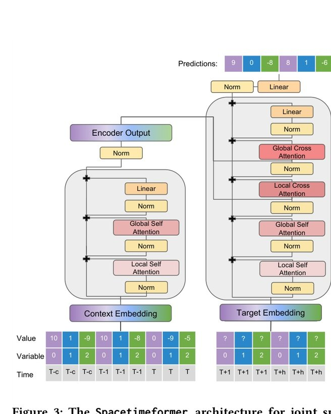
- 修复真实时间戳、gap-aware窗口和33维静态特征；
- 将模型参数量匹配AGFormer，排除“模型太小”这一解释；
- 引入local temporal attention和linear global spatiotemporal attention；
- 分离value embedding与time embedding，增加given/missing embedding；
- 增加encoder context token、decoder target token和更完整cross-attention；
- 分别测试future time context、linear output和gated context。
实验显示，轻量realtime context版本MAE为17.9967；参数扩大后反而变为18.6715，说明容量不是主要瓶颈。更接近原论文的版本中，关闭future time context使MAE从18.4433改善到18.2950，表明解码侧未来时间信息在当前数据与目标中可能形成噪声。加入linear output后MAE大幅改善到17.0688，但仍未超过AGFormer。
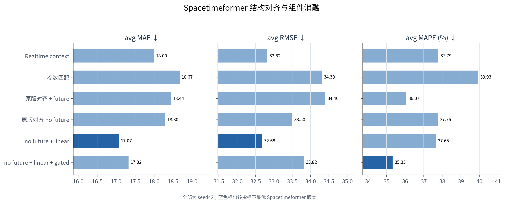
该结果并不意味着Spacetimeformer普遍弱于图模型，而是说明在当前规则网格、样本规模和计算预算下，显式空间先验具有更高样本效率；把所有关系重新交给token注意力学习，既增加优化难度，也需要近似注意力。负结果的价值在于排除了“只要更大、更接近原版就一定更好”的假设，并发现了可迁移的线性输出路径。
5.4 外生特征、周期滞后与多图消融
Week 4按“单因素变化—同窗口对照”的原则测试了多种增强方案：
| 实验 | avg MAE | 主要结论 |
|---|---|---|
| 完整Calendar context | 17.8542 | 调休日历更正确，但未改善MAE |
| Calendar + Weather | 17.8316 | 相对日历仅小幅变化，缺乏稳定收益 |
| Multi-graph AGFormer | 16.9569 | 低于多数模型但未超过单空间图门控版本 |
| lag_48 / lag_336 / delta | 17.9614 | 周期特征减少有效窗口，严格匹配对照下无收益 |
周期滞后实验由于 lag_336 要求更长历史，测试窗口从4,022降为3,433。因此项目另在相同3,433个窗口上评估原单图模型，基线MAE为16.2443，避免把窗口变化误认为模型变化。多图checkpoint的全局权重为flow 92.18%、spatial 7.37%、POI 0.42%、transit 0.02%，说明全局softmax无法按节点、时段或层动态选择关系，流量图又与强历史输入高度重复。
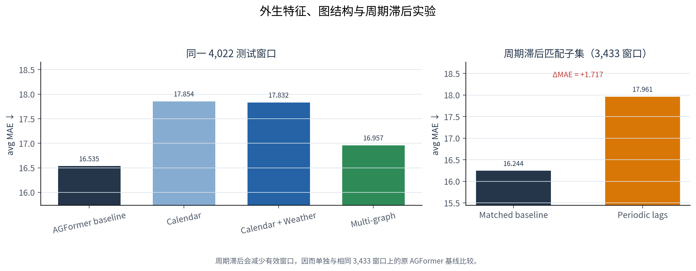
5.5 Linear residual head
Spacetimeformer实验显示，历史流量中存在非常强的线性自回归成分。项目将过去48步inflow直接通过线性层映射为未来48步，并与非线性主干相加：
prediction = nonlinear_AGFormer(history, graph, context)
+ Linear(history_inflow)
线性分支负责稳定的日内惯性和趋势，AGFormer集中学习图传播、时间交互和非线性偏差。相同seed42下，平均MAE从16.5350降到16.1132，MAPE从37.35降到36.91，RMSE由30.1288轻微升至30.3198。这说明平均绝对误差改善并不等于尾部大误差同时下降，最终选型需要同时保留RMSE审计。
四个随机种子的AGFormer+linear结果为：
| seed | MAE | RMSE | MAPE |
|---|---|---|---|
| 42 | 16.1132 | 30.3198 | 36.91 |
| 7 | 16.9079 | 31.9627 | 39.75 |
| 21 | 16.4172 | 31.2766 | 36.51 |
| 123 | 16.5463 | 31.1309 | 38.10 |
MAE均值为 16.4961 ± 0.2850，支持linear head的收益并非单seed偶然。将四个模型在逐样本预测层取算术平均后，完整24小时MAE进一步降为15.9030。ensemble不是把四个指标求平均，而是先平均四组预测，再与真实值计算一次指标，因而能够抵消部分随机初始化方差。
5.6 最终预测结果与模型选择
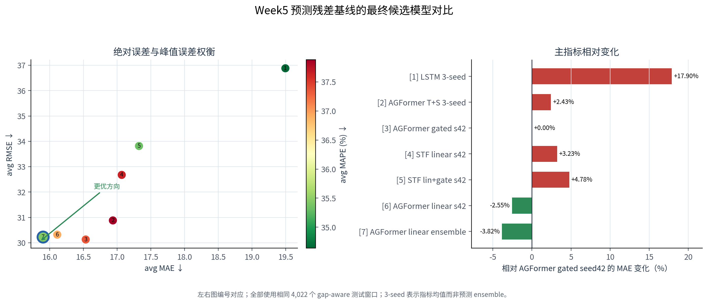
| 模型 | 参数口径 | avg MAE | avg RMSE | avg MAPE |
|---|---|---|---|---|
| LSTM gap-aware 3-seed均值 | 0.054M | 19.4941 | 36.8806 | 34.64 |
| AGFormer Time+Static 3-seed均值 | 0.050M | 16.9376 | 30.8805 | 37.88 |
| AGFormer gated seed42 | 0.050M | 16.5350 | 30.1288 | 37.35 |
| Spacetimeformer no-future + linear | 0.091M | 17.0688 | 32.6759 | 37.65 |
| AGFormer gated + linear seed42 | 0.052M | 16.1132 | 30.3198 | 36.91 |
| AGFormer gated + linear 4-seed ensemble | 4×0.052M | 15.9030 | 30.2250 | 35.44 |
最终选择ensemble作为离线异常残差和24小时预测主模型，因为MAE最低、MAPE优于原AGFormer，且正常时段残差底噪更低。实时资源受限时采用seed42单模型作为降级方案，只需一次forward，MAE仅比ensemble高0.2102。原gated seed42保留为最低RMSE审计参考。该角色划分比宣称某个模型“所有指标绝对最优”更符合工程实际。
6. 三路异常检测、事件融合与分类
6.1 弱监督任务定义
项目样本不包含权威异常事件真值，因此不能直接进行标准监督分类。Week 5采用统计规则生成弱标签，作为固定评估锚点，并保留两级口径。Level-A要求同一时间步至少12个网格的inflow z-score大于3；Level-B在此基础上还要求至少25个网格的outflow z-score大于3，代表更严格、更稀疏的同步流入流出异常。outflow统计量独立在训练集拟合，避免用inflow离散程度代替outflow。
弱标签的意义是让三类方法在同一参考下比较，不是把规则生成结果包装成人工真值。尤其统计分支与弱标签都依赖时槽z-score，存在同源性，因此其召回率为1具有结构性优势。报告始终将Precision、Recall和F1解释为“与弱标签的一致性”，而不是现实事件识别准确率。
6.2 统计检测：3σ与IQR
统计分支在训练集上为每个“日内时槽×网格”计算均值、标准差、Q1、Q3与IQR：
z = (x - mean[slot,node]) / std[slot,node]
IQR = Q3 - Q1
normal range = [Q1 - 1.5×IQR, Q3 + 1.5×IQR]
3σ对均值附近的标准化偏离敏感，IQR对偏态和极端历史值更稳健；统计分数取二者较强证据，并区分high、low和bidirectional方向。按网格与时槽拟合的原因是，商业区晚高峰与郊区夜间的“正常范围”不同。该方法覆盖率高、解释直接，但统计检测正例率达到41.77%，单独使用会产生大量候选。
6.3 重构检测：VAE与Transformer AE
VAE输入单个时刻的1,024维inflow网格，将其压缩为概率潜变量后重构空间分布；Transformer AE输入长度12的序列，即连续6小时，对每个时间步进行重构。前者关注单时刻整体空间形态，后者关注演化过程是否符合正常模式。
两种自编码器都只用weak-normal样本训练。VAE只接受Level-B弱标签为0的时间步；Transformer AE要求12步窗口中所有时间步都不是Level-B异常。训练集15,738个时间步中有199个Level-B弱正例，最终VAE使用15,539个向量，Transformer AE形成14,933个正常窗口。这样可以降低模型“学会重构明显异常”的风险，但weak-normal仍可能包含漏标异常，因此不能称为严格正常数据。
6.4 预测误差检测
第三条分支使用Week 4最终四seed AGFormer ensemble：
prediction_residual = |observed_inflow - predicted_inflow|
实时异常采用h1即未来30分钟预测，因为它精度最高且符合观测到达后的即时比较。预测残差能够识别“绝对流量不高但与历史、时间和空间关系不一致”的变化；同时它也可能把模型本身的预测失败当成异常，因此不适合作为唯一依据。在验证口径下该分支覆盖较低，最终融合权重为0.10，主要发挥补充作用。
6.5 分数校准与加权软投票
三类原始分数量纲不同，先按各自验证阈值映射到0–1：
confidence = clip(score / (2 × threshold), 0, 1)
原始阈值对应0.5置信度。这里的confidence只是可比较的异常强度，并非经过概率校准的“异常发生概率”。融合公式为：
fusion_score = 0.70 × statistical_confidence
+ 0.20 × reconstruction_confidence
+ 0.10 × prediction_confidence
最终阈值0.56、最少异常网格数6均在验证集选择后固定。另一个无精度约束方案使用0.60/0.20/0.20和阈值0.51，在测试Level-A上F1更高但输出207个事件；最终高精度方案输出131个事件，Level-B F1更高、人工核验负担更小，更适合交付。
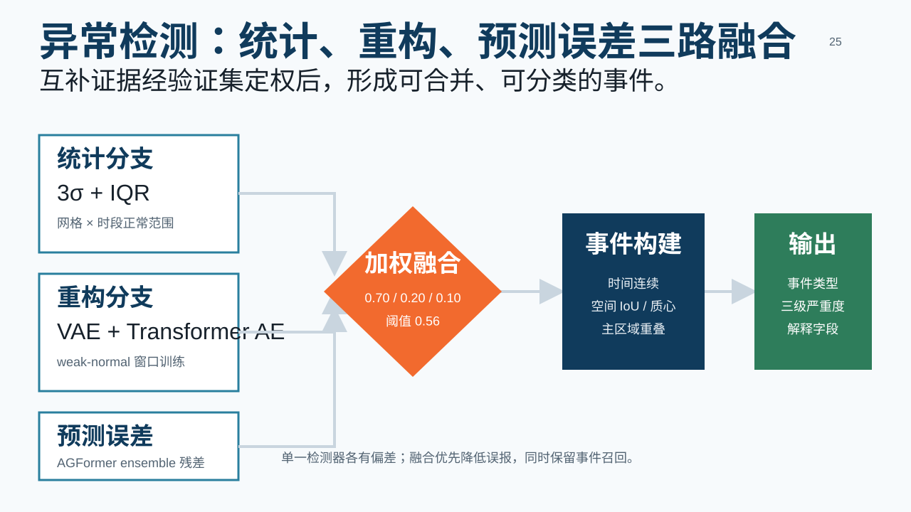
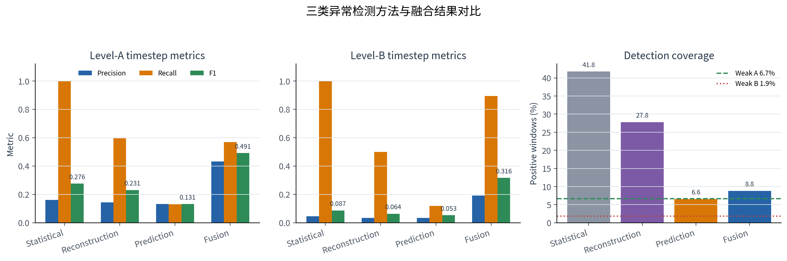
6.6 从异常网格到时空事件
每个时间步先按八邻域提取连通异常簇。两个相邻时间步只有在时间连续，并且空间IoU不低于0.05或异常掩码质心距离不超过4个网格时，才合并为同一事件：
IoU = |mask_t ∩ mask_t+1| / |mask_t ∪ mask_t+1|
IoU适合区域稳定重叠的事件，质心距离允许人群或拥堵区域缓慢移动。非连续30分钟缺口强制断开。事件级评估采用一对一最大基数匹配，避免一个预测事件重复命中多个参考事件。
最终双向融合产生131个候选事件。Level-A下timestep Precision/Recall/F1为0.4322/0.5688/0.4912；事件级为0.4580/0.5085/0.4819，对应118个参考事件、131个预测事件和60个一对一匹配。Level-B事件召回为0.7931，但Precision较低，因为参考事件更少。事件级F1不一定高于timestep F1：事件被拆成多个片段或被错误合并时，会额外产生FP或FN；其价值在于更接近实际处置语义。
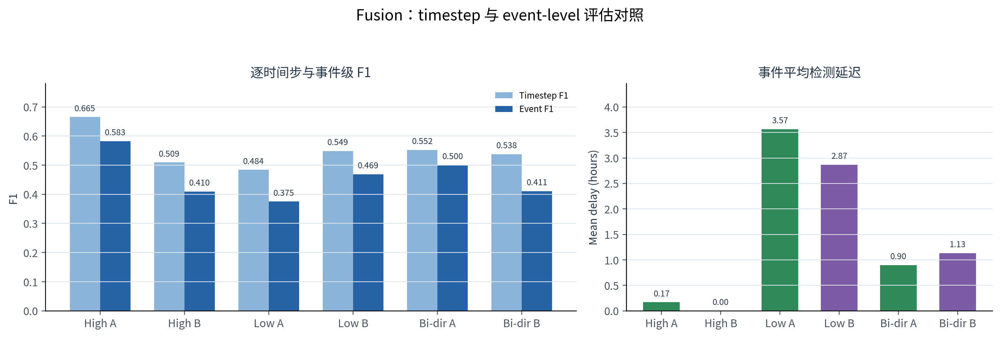
6.7 事件分类与解释字段
事件类型由规则特征推断：大型集会强调较大范围、持续性和相对均衡的流入流出；交通拥堵强调带状形态、道路密度和较长持续时间；突发事件强调短时、小范围、多簇或不稳定形态。使用的主要特征包括 aspect_ratio、road_density、in_out_imbalance、duration_trend 和 cluster_count。最终规则输出14个大型集会、6个交通拥堵和111个突发事件，但没有类别真值，不能将这一分布解释为分类准确率。
每个事件同时输出 statistical/reconstruction/prediction score、dominant method、top cells、最大z-score、最大重构误差、最大预测残差、道路密度、流入流出不平衡和趋势斜率。119/131个事件由统计分支主导，说明系统本质上仍是统计规则主导、深度方法补充的融合基线。
为支持人工核验，系统分层抽取50个事件：20个最高置信、15个阈值附近边界事件、15个“弱标签未命中”的候选。后者只能称为weak-label false-positive candidate，不能在未人工查看前称为真实假阳性。人工字段预留 manual_is_real_anomaly、manual_event_class 和 manual_notes，但当前未完成权威标注。
7. 系统实现：端到端流水线、API、Web与预警
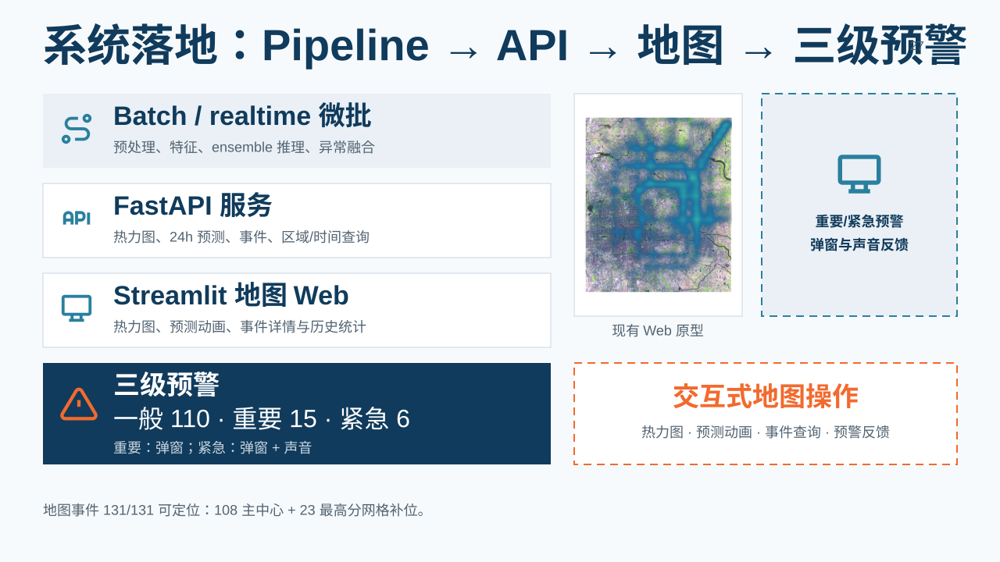
7.1 Batch与realtime微批流水线
Week 6将数据校验、特征产物、模型推理、异常检测、事件构建和预警映射封装为统一pipeline。Batch模式适合离线重跑完整测试段或复用Week 5结果生成历史预警；realtime模式读取最新N个有效窗口，加载固定checkpoint和校准阈值，执行微批预测与异常检测。当前“实时”是离线数据上的滚动模拟，并未连接真实消息队列，报告不会将其描述为生产在线流。
预处理与特征工程默认只校验已生成artifact，只有显式配置才从原始数据重建。重构模型在realtime中强制 inference_only=true：checkpoint缺失或配置哈希、数据路径、切分、缩放器、标签规则不匹配时直接失败，不会在服务进程中偷偷训练。最新同一forecast origin的48步预测保存为独立 forecast_24h.npz，避免把48个不同起点的h1结果错误拼成24小时预测动画。
7.2 FastAPI服务
FastAPI与GPU推理解耦，只读取pipeline原子发布的NPZ、CSV和JSON快照。这样HTTP worker不加载四个AGFormer和两个自编码器，查询延迟、显存和故障边界更可控。主要接口包括：
| 方法 | 路径 | 功能 |
|---|---|---|
| GET | /api/v1/status |
服务与artifact就绪状态 |
| GET | /api/v1/heatmap |
指定时间、区域的观测或h1预测热力图 |
| GET/POST | /api/v1/predictions、/predict |
同一预测起点的未来24小时序列 |
| POST | /api/v1/anomaly/detect |
对已有三方法融合分数执行时间片判定 |
| GET | /api/v1/anomalies |
历史或实时事件筛选与分页 |
| GET | /api/v1/anomalies/{event_id} |
单事件详情和解释字段 |
| GET | /api/v1/alerts |
按三级预警查询 |
| GET | /api/v1/statistics |
事件类型、等级和时间统计 |
接口支持grid ID、行列范围、时间、类型、等级和最低分数过滤；缺失必要artifact时业务接口返回503，status仍可返回200和degraded状态。当前API无身份认证，正式部署只能绑定本机/内网，或置于带TLS、认证和VPN的反向代理之后。
7.3 Streamlit地图与交互
Web端以地图为主组件，提供当前观测与预测热力图、同一origin的未来48帧动画、异常事件marker与详情、历史事件检索、类型/等级/时间统计以及自动刷新。重要预警触发横幅和弹窗，紧急预警额外播放声音；浏览器会话记录已确认event ID，避免每次刷新重复打扰。
地图背景复用项目数据收集阶段的Landsat影像并重投影到WGS84，同时叠加环路参照。由于原始流量网格缺少权威bbox，项目采用独立展示坐标校准：保持32×32方向和尺度不变，仅对覆盖层做南北/东西平移。训练用 grid_meta、node ID、静态特征、图结构、预测与异常结果均未修改，因此地图校准不影响Week 4/5指标；它也不能证明绝对地理定位已完全正确。
7.4 三级预警
Week 5保留研究型severity 1–4，Week 6增加产品层映射而不覆盖原字段：severity 1–2为一般，只进入列表和地图；severity 3为重要，触发横幅、地图高亮和弹窗；severity 4为紧急，增加红色强提醒与声音。131个历史事件映射为110个一般、15个重要和6个紧急，只有21个事件触发弹窗，降低预警疲劳。
这种分层把“检测强度”与“界面行为”解耦。后续若人工核验表明某类误报较高，可以修改产品预警映射而不破坏Week 5原始事件和评估复现性。
8. 实验结果、可解释性分析与性能优化
8.1 最终预测精度与误差结构
最终四seed ensemble在4,022个严格测试窗口上的结果如下：
| 范围 | 时间跨度 | MAE | RMSE | MAPE |
|---|---|---|---|---|
| h1 | 0.5小时 | 11.3019 | 19.8621 | 23.49 |
| h3 | 1.5小时累计 | 12.6473 | 22.9856 | 26.18 |
| h6 | 3小时累计 | 13.4194 | 24.7530 | 28.28 |
| h12 | 6小时累计 | 14.1068 | 26.2676 | 30.66 |
| avg | 24小时 | 15.9030 | 30.2250 | 35.44 |

空间上，1,024个网格h1 MAE中位数为9.4145，P90为21.3621，最困难grid 157达到43.8480。时间上16:00 MAE为24.4416，显著高于多数时槽。该异质性说明全局平均不能替代节点与时段审计，未来可对高误差区域建立局部校准器或分层阈值。
8.2 时间注意力与空间自适应图
注意力分析覆盖四个checkpoint、测试集首中末四个日期和两层AGFormer。聚合后平均时间注意力归一化熵为0.9956，最近3小时注意力质量占0.1223。第一层相对关注9.5–13小时前，第二层同时关注最近时刻和8.5–9.5小时前。高熵表示跨模型和样本平均后较分散，不能推断每个样本都没有关键lag，也不能把attention直接解释为因果贡献。
自适应邻接平均行熵为0.7261，top-k权重平均集中度为0.2238，说明节点嵌入学到了非均匀关系。但该分析只解释非线性分支的learned graph，不覆盖预定义spatial GCN和并行linear residual head，因此不是完整空间贡献分解。
8.3 TreeSHAP代理特征重要性
为解释完整四seed ensemble的h1行为，项目使用时间留出的ExtraTrees代理模型，再用TreeSHAP分解。代理模型R²为0.9926、MAE为4.4381 flow units，SHAP平均加法误差约 4.13×10^-6。历史inflow与outflow的重要性占比分别49.80%和47.63%，合计97.43%；时间日历占2.33%，静态各组全局占比较小。
排名靠前的特征集中在最近1–4个半小时步以及lag 46–48，说明短期惯性与接近前一日边界的信息都重要。静态特征占比小不等于无用：代理输入压缩、门控交互、节点条件化和全局聚合都会稀释单组mean |SHAP|。TreeSHAP解释的是高拟合行为代理，不是直接对神经网络求梯度，必须与代理质量一起阅读。
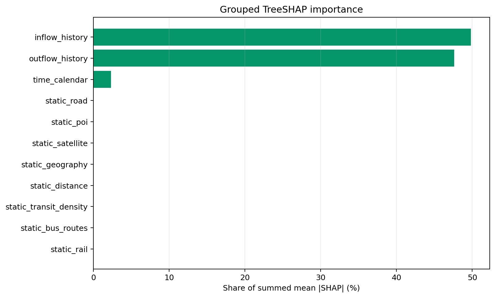
8.4 异常上下文证据
131个融合事件中，46个匹配极端温度候选证据，17个匹配强风，13个发生在法定节假日，3个发生在调休工作日，3个表现为周末模式，49个没有外部上下文匹配。天气时间覆盖率为100%，但未配置可验证的新闻或活动表，因此新闻匹配数为0。
这些输出只能称为“候选上下文证据”：天气与事件同现不证明天气导致事件，规则 event_type 也只是形态标签。系统保留“未知”比强行为每个异常生成故事更可靠。
8.5 系统性能优化
Week 7使用测试集末尾24个有效窗口固定基准，比较相同模型、输出和异常规则。主要优化包括：让h1和Web forecast共享一次完整序列推理；按数据SHA-256、训练长度、时区和规则缓存时槽统计量；普通预测关闭未使用attention weight物化；小微批将DataLoader worker从2改为0；API对事件时间转换和坐标合并建立mtime-aware派生缓存。
| 方案 | 流水线秒数 | 峰值RSS MiB | CUDA峰值MiB |
|---|---|---|---|
| baseline FP32 | 6.416 | 3881.5 | 826.2 |
| optimized cold FP32 | 6.106 | 2793.2 | 703.7 |
| optimized warm FP32 | 4.613 | 1791.2 | 703.7 |
| optimized warm FP16 | 4.596 | 1894.4 | 419.7 |
正式候选为暖启动FP32：端到端1.39倍加速，进程树RSS汇总下降53.9%，CUDA峰值下降14.8%。batch扫描中8的中位模型延迟最低；batch 24显存升至约2,074MiB且速度反而变慢。FP16数值门槛通过但速度仅0.9945倍，未达到1.05倍部署门槛；动态INT8只在CPU单模型微基准中约1.305倍，未覆盖生产CUDA ensemble，因此不部署。
API优化后，历史事件和统计端点分别约1.59倍和1.69倍；完整热力图与48×1024 forecast JSON略慢，瓶颈转向Python对象构建、JSON序列化和压缩，不能宣称所有接口全面加速。
8.6 Optuna超参数优化方案
受时间和GPU预算限制，Week 7完成了可执行方案与代码，但没有运行Optuna，因此不报告虚构最优参数。方案冻结数据、切分、9维动态输入、33维静态特征、single spatial graph、gated fusion、linear head、Huber loss和指标规则，只搜索学习率、batch、d_model、head数、FFN倍率、层数、dropout、weight decay与adaptive embedding维度。
计划使用TPE、30 trials、18小时软墙钟、单GPU串行、MedianPruner、SQLite恢复和协议指纹。搜索objective只构建训练/验证数据；Top-5进行同预算全量验证训练，至少相对同轮incumbent改善0.5%才进入四seed复验；只有通过稳定性门槛后，显式 --run-final-test 才访问一次4,022窗口测试集。这种门禁避免在自动搜索中反复查看测试集造成选择偏差。
9. 综合结果、项目亮点与技术难点
9.1 从研究原型到可运行系统
五个月工作的核心结果不只是一个误差数字，而是一条可追溯的完整链路：原始半小时网格流量经过时间连续性检查、训练集拟合的归一化、动态与静态特征构建和图结构映射，进入多模型预测；预测残差再与统计检测和重构检测融合，形成带等级、类型和解释字段的异常事件；最终通过批处理、实时微批、REST API和地图界面提供服务。Week 7的固定基准进一步验证了精度、延迟、内存和可解释性输出。
最终预测候选为四seed AGFormer+linear ensemble，24小时平均MAE为15.9030，h1 MAE为11.3019。异常模块在缺少人工真值的条件下没有把弱标签F1包装成真实业务准确率，而是同时输出high/low/bidirectional三种方向口径、timestep与event-level评估、50事件人工核验表以及证据字段。系统层保留了研究字段与产品预警字段之间的转换，因而后续可以独立更新阈值、界面行为和人工处置规则。
9.2 主要亮点
- 严格的时间防泄漏设计。 切分后再切窗、窗口内连续性校验、训练集拟合scaler、Optuna验证/测试门禁，贯穿预测、异常检测和调参方案。
- 动态图与静态上下文联合建模。 固定空间图编码邻域传播，自适应邻接学习数据驱动的非局部关系，33维静态节点特征和时间上下文通过门控进入AGFormer。
- 以消融而非模型名称驱动选型。 对日历、天气、多图、周期滞后、future-time context、原版式Spacetimeformer组件和linear residual逐项验证。复杂模块无增益时保留负结果，并回到更可靠的候选。
- 三路异常融合和事件化表达。 统计、重构和预测残差的分数先校准再软投票；空间簇通过IoU或质心距离与时间连续性合并，避免把孤立网格报警直接暴露给业务端。
- 研究与工程评价闭环。 同一最终候选同时接受多seed精度复验、注意力和SHAP代理解释、流水线时延/RSS/CUDA显存测试、API缓存与部署边界审计。
9.3 关键技术难点及处理
第一，原始时间轴包含多段间断。若只按数组下标切窗，模型会把跨缺口样本当作连续序列。项目将连续性检查纳入窗口生成，并将有效样本数和切分口径写入结果，从源头避免隐性泄漏。
第二，节点有流量、日历、天气、POI和交通设施等异质信息，量纲、时变性和可信度不同。项目没有一次性堆叠全部特征，而是先形成候选特征，再通过训练时可用性检查和消融筛选；全序列统计产生的8维静态流量画像被移出最终输入，以免引入未来信息。
第三，复杂Transformer不必然优于较小模型。Spacetimeformer在local/global attention、encoder-decoder embedding和cross-attention逐步对齐后仍未胜出，说明本任务的数据量、网格规模、长预测跨度和优化预算共同限制了优势发挥。并行linear head反而改善了AGFormer，因为它为强短期自回归成分提供了低方差路径，而非线性分支可集中学习残差和空间交互。
第四，异常检测没有人工真值。项目使用弱标签完成相对比较，同时明确其循环性；通过事件级评估、方向拆分、人工抽样表、三方法贡献和外部上下文候选证据降低误读风险，但不把这些结果等同于真实线上召回率。
第五，原始网格缺少权威地理bbox。地图覆盖层只做展示坐标校准，训练节点、静态特征和图结构保持不变，并在部署文档中明确绝对位置仍需权威元数据确认，避免为了视觉对齐修改实验数据。
10. 评估边界、局限性与改进方向
预测指标来自固定历史测试集，能够比较同口径模型，但不能替代跨城市、跨季节和分布漂移测试。四seed ensemble改善了稳定性，却增加了推理成本；当前性能优化已缓解该问题，进一步可研究蒸馏、共享backbone或按不确定度启用ensemble。模型对高峰时段和少数高误差节点仍不均衡，可引入节点分层损失、分位数预测和校准区间。
异常评估的主要限制是缺少人工标注。弱标签由同一流量序列构造，检测器若接近标签规则会天然占优；50事件核验表只是抽样工具，尚未形成正式标注集。下一阶段应由业务专家采用双人复核和冲突仲裁建立事件真值，报告event precision、recall、检测延迟、误报间隔以及不同预警等级的处置成本，并在验证集重新学习融合权重和阈值。
外部证据目前以天气和日历为主，新闻/活动证据为空，因此“异常类型”应理解为基于时空形态的候选类型。若能接入经过授权的道路状态、活动和事件信息，可建立可审计的证据链接，并区分相关性、可能原因和已确认原因。地图也需要权威网格边界和坐标参考才能支持线下处置。
系统原型尚未覆盖认证、权限、限流、消息队列、持久化事件库、在线漂移监控和高可用部署。正式上线需要在内网或TLS反向代理后运行，增加模型/数据版本注册、回滚、审计日志、Prometheus指标和灰度发布。Optuna代码已经落实但未执行；未来应在固定预算下先做训练/验证搜索，再进行多seed复验和一次性测试，不能用测试集指导trial选择。
11. 总结与展望
本项目围绕网约车安全场景下的城市人流感知，完成了“数据治理—特征与图构建—预测模型比较—异常融合—API与可视化—解释和性能审计”的端到端闭环。实践表明，稳定提升更多来自时间口径修复、信息防泄漏、严格消融和与数据规律匹配的结构，而不是简单扩大Transformer。最终AGFormer+linear多seed ensemble成为Week 4预测候选，三路融合事件检测衔接Week 5，Week 6–7则将研究结果变为可查询、可解释、可测量的系统原型。
后续工作按优先级包括：建立人工事件真值和处置反馈闭环；补齐权威地理元数据及经过授权的外部事件证据；执行受控Optuna搜索与跨时段复验；研究概率预测、异常不确定度和漂移检测；通过蒸馏、缓存、批处理与异步事件存储提高线上效率。最终目标不是只追求离线MAE或弱标签F1，而是形成可复现、可解释、可运营且能够持续校准的人流安全决策支持能力。
参考文献
[1] Yu, B., Yin, H., & Zhu, Z. Spatio-Temporal Graph Convolutional Networks: A Deep Learning Framework for Traffic Forecasting. IJCAI, 2018.
[2] Wu, Z., Pan, S., Long, G., Jiang, J., & Zhang, C. Graph WaveNet for Deep Spatial-Temporal Graph Modeling. IJCAI, 2019.
[3] Vaswani, A., et al. Attention Is All You Need. NeurIPS, 2017.
[4] Grigsby, J., Wang, Z., Nguyen, N., & Qi, Y. Long-Range Transformers for Dynamic Spatiotemporal Forecasting. arXiv:2109.12218, 2021.
[5] Kingma, D. P., & Welling, M. Auto-Encoding Variational Bayes. ICLR, 2014.
[6] Lundberg, S. M., & Lee, S.-I. A Unified Approach to Interpreting Model Predictions. NeurIPS, 2017.
[7] Akiba, T., Sano, S., Yanase, T., Ohta, T., & Koyama, M. Optuna: A Next-generation Hyperparameter Optimization Framework. KDD, 2019.
附录：需求覆盖与主要交付物
| 学校要求部分 | 报告对应章节 | 主要证据 |
|---|---|---|
| 项目背景、需求分析 | 第1章 | 业务问题、功能与非功能需求 |
| 技术路线 | 第2章 | 端到端路线、20周安排 |
| 数据处理 | 第3章 | 连续性、切窗、特征、图构建 |
| 模型设计 | 第4–5章 | 基线、AGFormer、Spacetimeformer、消融与ensemble |
| 系统实现 | 第6–7章 | 三路异常、流水线、API、Web、三级预警 |
| 实验结果 | 第5、6、8、9章 | 预测、异常、性能与综合结果 |
| 可解释性分析 | 第6.7、8.2–8.4节 | 方法贡献、attention、adaptive graph、SHAP、上下文证据 |
| 总结与展望 | 第10–11章 | 边界、局限、后续路线 |
主要工程与文档交付物包括：可配置训练与评估脚本、预测与异常checkpoint/result artifacts、Week 1–7报告、Week 6 API与部署指南、Week 7三类专项报告、可恢复Optuna方案、FastAPI服务、Streamlit地图界面和自动化测试。所有数字均来自现有固定实验输出；本报告未为补写内容重新训练模型，也未把尚未执行的优化计划写成实验结论。